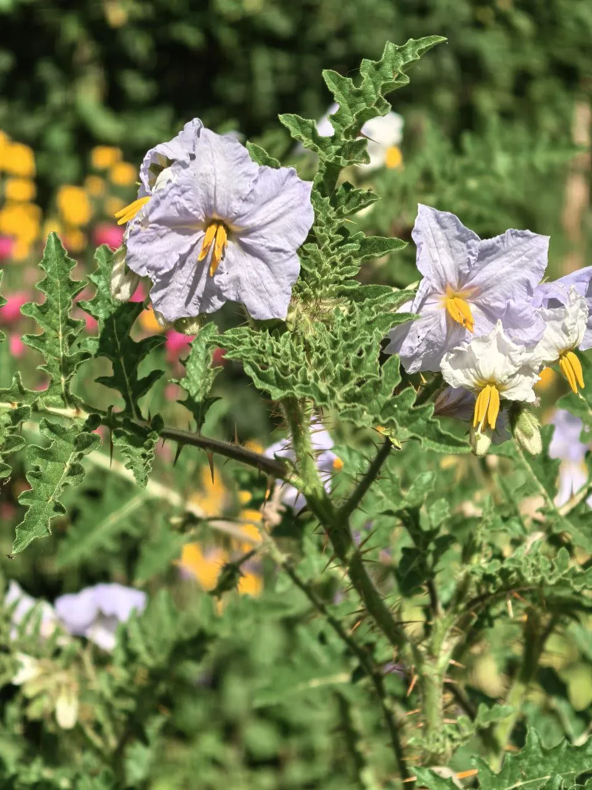
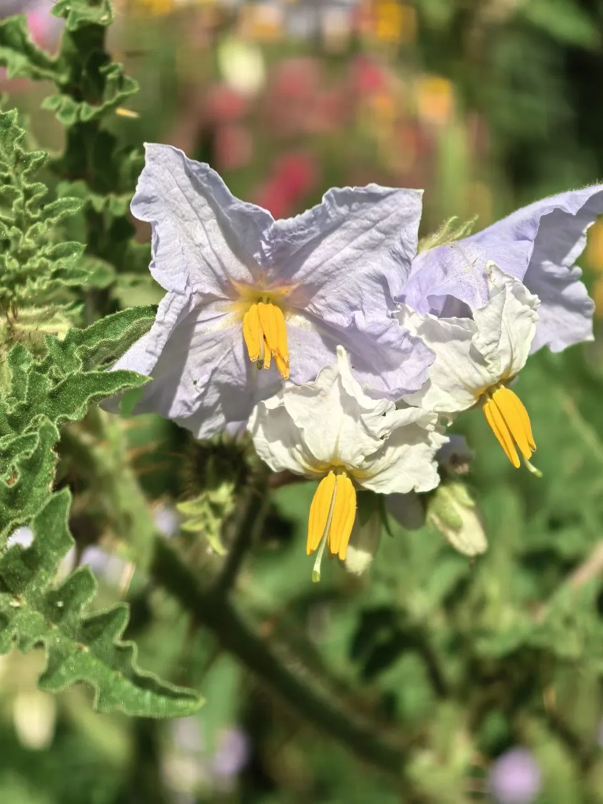
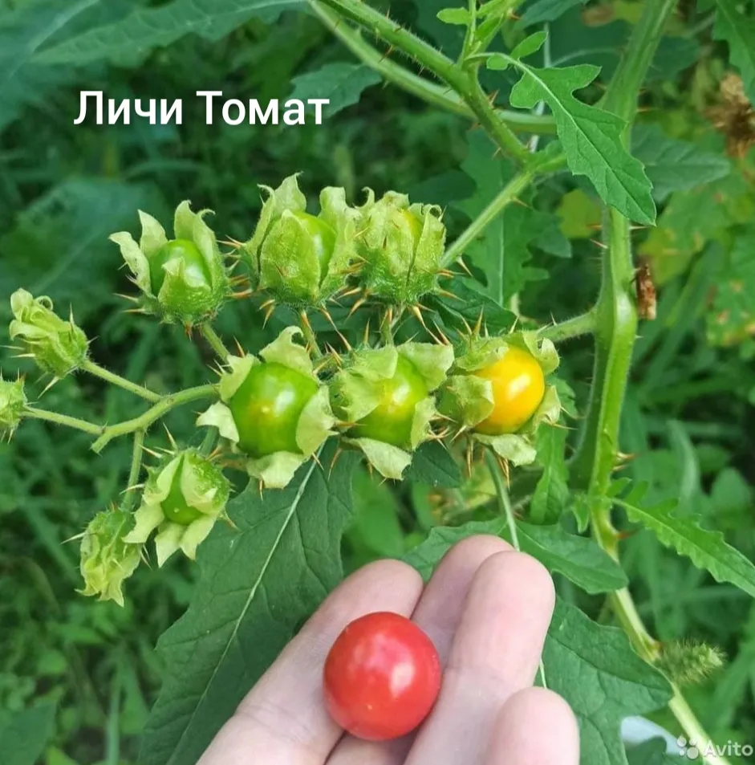
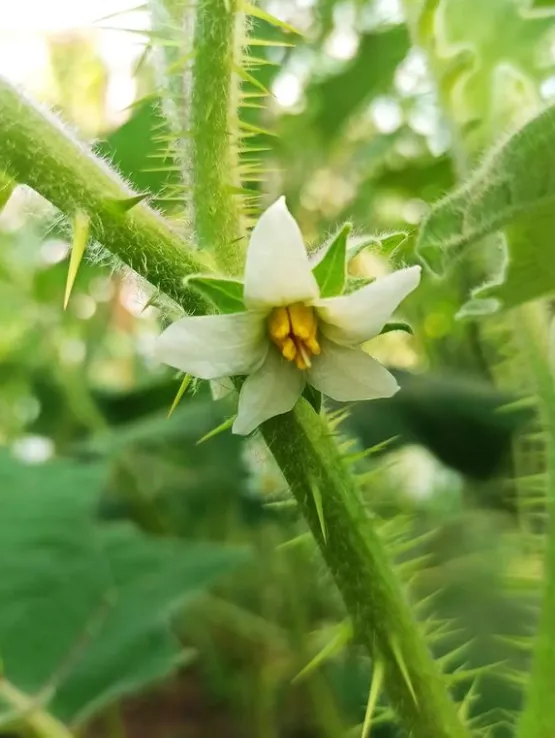

Редкое растение с шипами, ароматом свежей рыбы у цветов и плодами со вкусом смеси черешни и томата. Очень выносливо и неприхотливо.
Преимущества культуры для вашего участка.
Каждый сорт уникален — от формы до вкуса.
Личи-томат в разные сезоны: от всходов до сбора урожая.




Всё, что нужно знать о культуре: от посадки до хранения.
Личи-томат — одно из самых неприхотливых растений, способное расти практически без ухода.
Вкус необычный — кисло-сладкий, напоминает смесь черешни и томата. Ягоды нежные и сочные. Едят их, как правило, в свежем виде.
Да, цветы личи-томата имеют специфический аромат, напоминающий запах свежей рыбы. Несмотря на это, плоды очень вкусные.
Это одно из самых неприхотливых растений. Может расти на любых почвах, не требует частого полива и устойчив к вредителям. Подходит для начинающих садоводов.
Посадочный материал из коллекции Batatchudo и рекомендации по выращиванию.